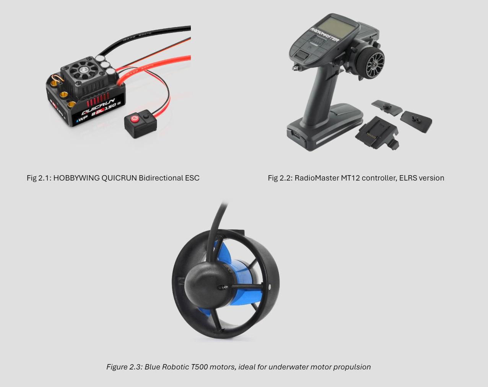
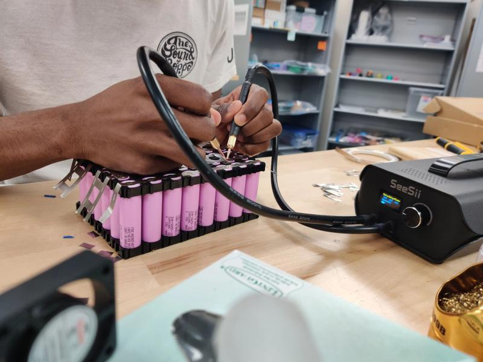
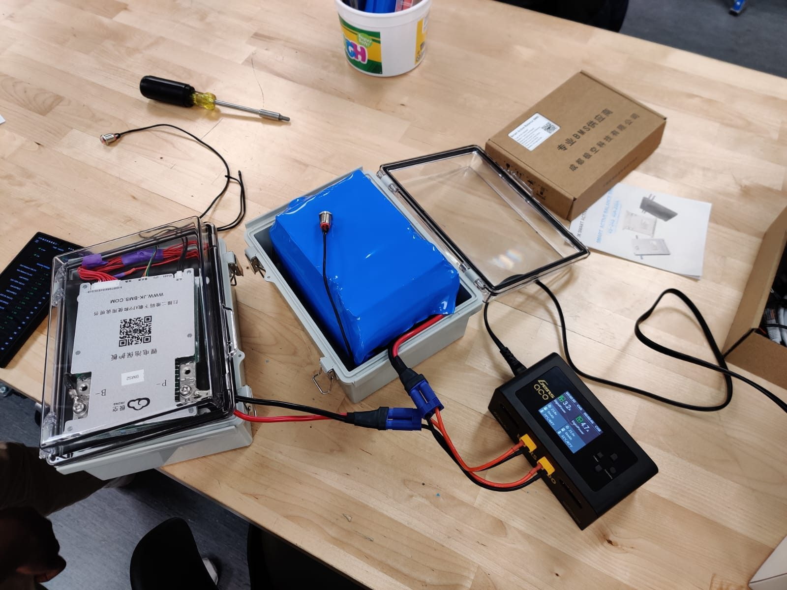
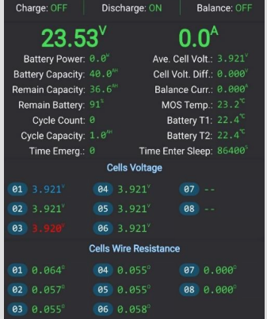

Electric Boat – Battery & Propulsion System
Overview
Designed and built a dual-battery electric propulsion system for a competition boat with a team, prioritizing safety, efficiency, and reliability. The system used two custom 18650 Li-ion battery packs with JK-BMS protection and dual 1 kW thrusters with differential thrust steering. The boat took 2nd place in the Displacement Hull Division at PEP 2024.
2nd Place PEP 2024
Dual 6s8p Li-ion packs
2× 1 kW T500 thrusters
JK-BMS
Differential steering
🏆 2nd Place – PEP 2024 (Displacement Hull Division)
System Architecture
- Energy Storage: Two identical custom 6s8p 18650 Li-ion battery packs with BMS protection.
- Battery Management: JK-BMS for cell balancing, voltage monitoring, current limiting, and short-circuit protection.
- Propulsion: Two 1 kW Blue Robotics T500 thrusters (one per battery).
- Control: Differential thrust for steering (no rudder required).
- Mechanical: Vibration isolation + waterproof enclosure for protection and reliability.

Build Process
- Aligned cells with spacers and spot welded into a 6-series / 8-parallel layout (6s8p).
- Wrapped packs with rubber sheets to reduce vibration stress on cells.
- Connected JK-BMS to main terminals and each parallel group for balancing + monitoring.
- Heat-shrink wrapped the pack into a solid package and installed connectors.
- Sealed final packs inside waterproof casing for marine environment use.
- Repeated the full process to create two identical packs.
{kind=link}

{kind=link}

{kind=link}

Prototyping & Testing
Before mounting on the boat, the batteries were fully charged and tested under a ~1 kW motor load. The packs handled high current draw with minimal temperature rise, so no active cooling was required.
Results
- Runtime: ~2.5 hours at ~8 knots
- Range: ~20 miles (estimated based on runtime + speed)
- Load Testing: handled ~50 A current draw with minimal temperature rise
- In-water current draw: ~10 A average per motor at full throttle (~8 knots)
- Steering: differential thrust successfully eliminated need for a rudder

On-water testing demonstrating sustained cruise speed and stable differential-thrust steering.
Potential Improvements
- On-board charging module: Add external charging access without removing battery packs.
- Improved monitoring & data logging: Expand telemetry + logging for mobile electric systems (battery health, current, voltage trends, thermal tracking).
- Improved hull enclosure: A twin-sheet thermoformed hull could improve waterproofing and stiffness, with easier access to electrical components.